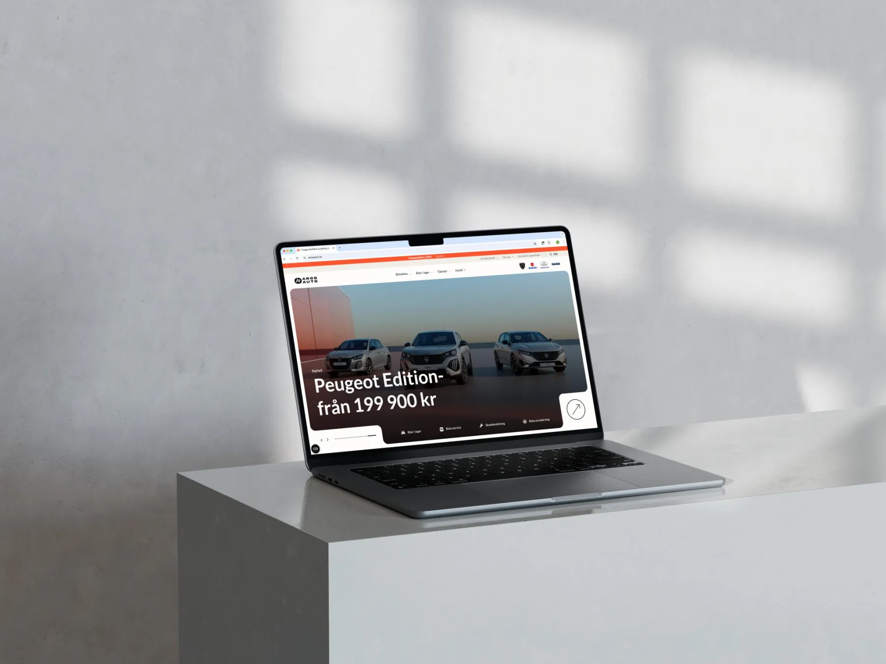
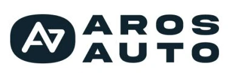
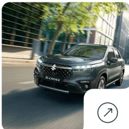
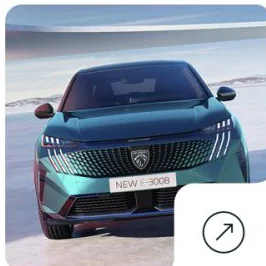
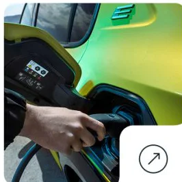
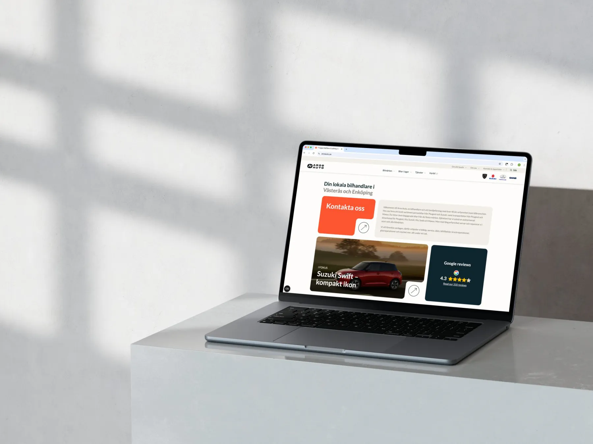
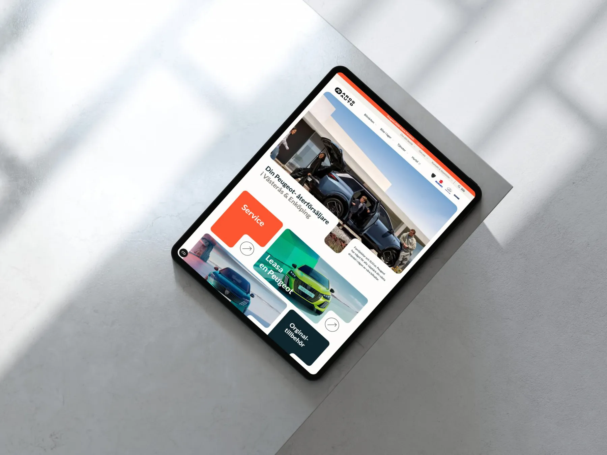

A car dealer site with room to breathe.
A new identity, a bento style layout and 50+ pages for a family owned car dealer in Västerås and Enköping.
- Client
- Aros Auto
- Agency
- Webbson
- My role
- UX design, art direction, front end
- Year
- 2024
- Live
- arosauto.se ↗

The brief
Aros Auto had been a Webbson client for years. When we built new tools at the agency for simpler, more flexible editing, they wanted in.
Over time the site had piled up a lot of content and badly needed a clean up of its pages and menus. They had also taken on a new car brand and wanted to refresh their identity to stay current and keep leading in their market.
The audience is people in the middle of life. A young family that needs a practical car, or someone busy with a career who needs a commuter car they can trust. At the same time they wanted to reach a new generation of young adults by thinking new and standing out.
After interviews and market analysis we ran a workshop with them on how to talk to that audience, which values and feeling to get across, and how the graphics should look. We each made moodboards, put them side by side and picked a palette, a shape language, typefaces and an overall style from what they had in common.
- Interviews
- Market analysis
- Workshop
- Moodboards
- 50+pages, rebuilt
- 2menus instead of one
- 4people in the build
- 0prompts written
Warm, clear and a bit rounded.
Straight out of the workshop moodboards: a palette, a shape, a typeface and a way to pick photos.

Logoabcdefghijklmnopqrstuvwxyz 0123456789



A light theme, but a warm one. An off white for backgrounds to reflect a family business, a dark blue for text and dark parts, and a punchy orange red that feels modern and pulls the eye where it should go.
Everyday photos people recognise themselves in, next to the high quality shots the car brands supply. Those bring the want-it feeling.
We tried a handful of sans serifs and landed on Lato. Easy to read, and its semi rounded shapes balance the rounded layout. Relaxed but still professional.
A bento layout that stands out.
Clear boxes for clear content, and a look no other car dealer around had.

With the concept in place we rebuilt the whole menu structure, one of the main reasons for the new site. Aros Auto was also putting more into SEO at the same time, which shaped the navigation too.
Then we sketched a skeleton of every page, to know what information and features each one needed. After a few rounds of that we moved to hi-fi prototypes, where the layout took the concept on board and we found fun ways to show a lot of content while still guiding people through it.

One long menu became two short ones, split by what people come to do.
Made before the AI boom.
No generated images and no generated code. Sketches, prototypes and a lot of hours in Figma and the editor, by a team of four.
- FigmaPage skeletons, then hi-fi prototypesEvery page planned before a line of code.
- Global partsMenu, footer and the shared pieces firstThe things every page leans on, built once.
- Motion OneA library of sections, then motionWe pulled every repeating section out of the prototype, built it once, and brought each one to life.
- BlocketCars in stock, straight from BlocketWith the library done the front end team split in two: one half built every subpage, the other the tricky features and the Blocket integration.
- WordPressCustom Gutenberg blocksA tailored editor so the team can build new pages on their own.
A site they can keep up with.
Tested over several rounds until the navigation and the flow of information felt right.
- IdentityA new graphic profile that reaches new audiences and lifts the Aros Auto brand.
- Structure50+ pages through a long design process, with several rounds to get the navigation and flow of information right.
- EditingA WordPress site on Gutenberg with custom blocks. A flexible, easy editor for whatever they want to add next.